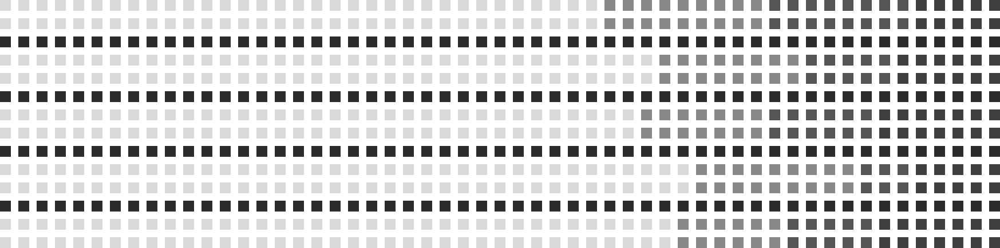

SAJU DATA
The Day Master Compatibility
올해 당신의 일간에게 찾아오는 관계 경향과, 가장 잘 통하는 일주를 확인해보세요.
화(火)의 해마다, 무토 일간은 관계에서 신뢰와 지속성을 택해왔습니다.
1986부터 2026까지, 다섯 번의 화(火)의 해. 무토 일간의 10명 중 6명이 신뢰와 지속성을 1순위로 택했어요.
19861996200620162026

신뢰·지속성
조화·소통
독립·자유
열정·자극
2026년, 무토 일간은 아래 세 일주와 가장 관계 가치가 비슷합니다.
중심의 무토에서 가까울수록 올해 관계가 잘 통해요. 밝게 표시된 셋이 특히 잘 맞는 궁합입니다.
MU EARTH
유사도
대표 특성